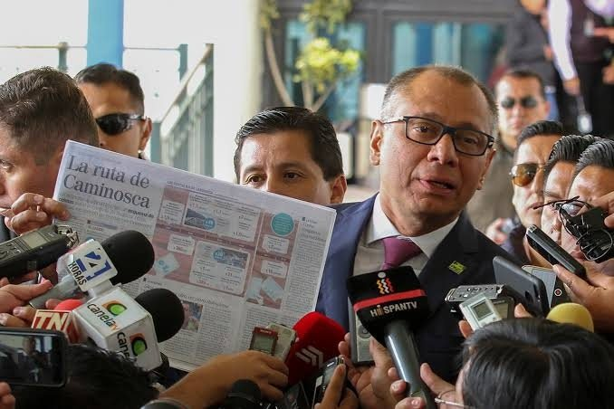
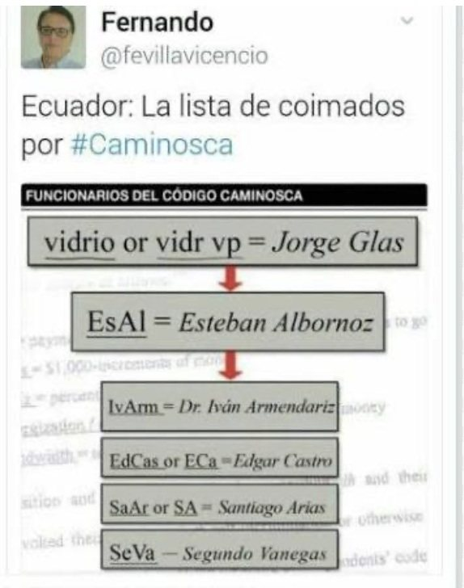
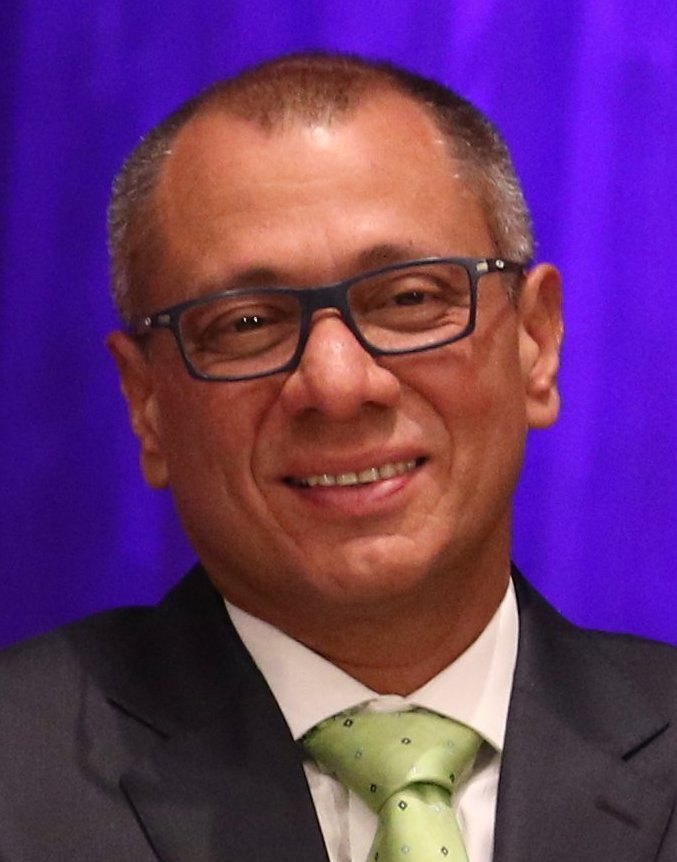
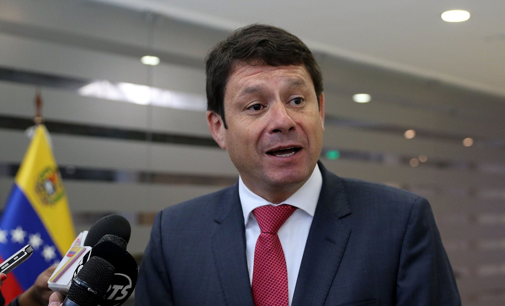
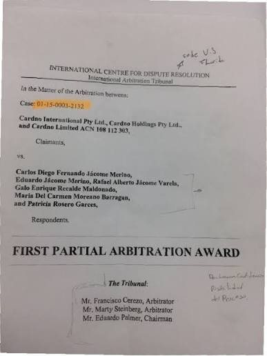
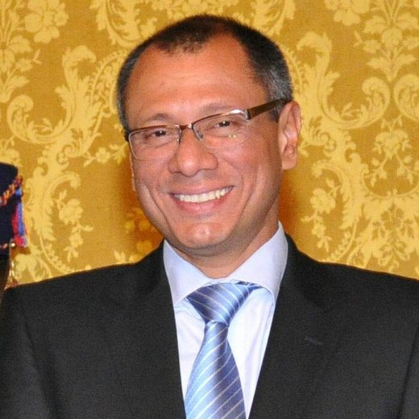
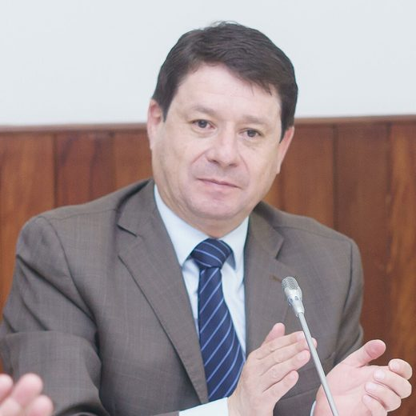

Una empresa que diseñaba el país
Para entender Caminosca hay que entender qué hacía. No construía represas. Las diseñaba y luego vigilaba que las construyeran bien. Fundada en Quito el 13 de marzo de 1976 por el ingeniero Carlos Jácome Merino, la consultora firmaba los estudios y la fiscalización de las obras más grandes del correísmo: Sopladora, Toachi Pilatón, Minas San Francisco, además de trabajos para Petroamazonas. Entre 2012 y 2014 facturó cerca de 100 millones de dólares y el 80 por ciento venía del Estado.

A mediados de 2014 la australiana Cardno compró la empresa por 18 millones de dólares. Quería un pie en Ecuador. Lo que compró fue un problema: a los pocos meses sus auditores encontraron pagos que no cuadraban. El 20 de enero de 2015 la firma BDO revisó las cuentas y no halló productos, asesorías ni servicios que justificaran millones transferidos a dos empresas extranjeras. El 2 de marzo de 2015 Cardno avisó a la bolsa de Australia que investigaba pagos irregulares de su filial ecuatoriana. En 2016 anunció que se desprendía de ella.
Un juicio que nadie debía leer
Cardno llevó a los exdueños de Caminosca a un arbitraje privado en Estados Unidos. Ese tipo de juicio no se publica. Las dos partes acordaron el sigilo. La prueba principal fue un informe forense de Kroll, la mayor firma de investigación corporativa del mundo, que reconstruyó correos, calendarios, transferencias y la identidad de las compañías de fachada.


Diario Expreso accedió al laudo y lo publicó el 13 de febrero de 2017 bajo un título que decía lo esencial: un juicio privado evidencia las coimas en el sector público. Al día siguiente salió la segunda parte. El tribunal había dado por razonable y soportado por la evidencia que Caminosca disfrazó pagos a funcionarios mediante gastos ficticios y que llevaba una contabilidad paralela para registrar pagos locales, presumiblemente en efectivo.
Me reúno con Edcas en el carro y acordamos un dh = 350. Energización vía Europa.
Anotación de calendario citada en el laudo arbitral
El mecanismo tenía dos sociedades de papel. Asesorías Australes, registrada en Chile, y Crown Mergers and Acquisitions, en España. Ambas inactivas, con domicilios fantasma y páginas web sin contenido, ambas armadas por empleados de Mossack Fonseca, el estudio panameño de los Panama Papers. Caminosca les facturaba subcontratos que nunca existieron. El dinero salía hacia cuentas en Bahamas, Brasil, España y Estados Unidos. La Superintendencia de Compañías confirmó que ninguna de las dos estaba autorizada a hacer negocios en Ecuador.
Había también pagos menores en efectivo, de entre 15.000 y 90.000 dólares por entrega, y préstamos ficticios otorgados poco antes de cada adjudicación. En unas hojas de cálculo aparecían dos pagos de 30.000 dólares, en enero y febrero de 2013, bajo el epígrafe Hidroeléctrico Vidrio, campaña política.
Hablar en kilobits
Carlos Jácome llevaba un calendario con claves. Nadie escribía la palabra soborno. La fracción de dinero que iba a un funcionario se llamaba kbps, como la velocidad de una conexión. El porcentaje sobre el total del contrato era MHz. El flujo del pago era Energización. El total, Bandwidth. Un dh era un pago a un funcionario. Los proyectos tenían número y los funcionarios tenían alias.
Los 100 kbps para Vidrio se dividen en 50 % por el proyecto 415 y 50 % por el proyecto 476.
Correo interno de Caminosca citado en el laudo

El proyecto 415 era Sopladora, una central hidroeléctrica con un contrato de fiscalización de 46 millones. El 476 era Toachi Pilatón, de 21 millones. Vidrio, en inglés Glass, era el vicepresidente de la República, Jorge Glas. En otras entradas aparecía como jGlas o simplemente VP. Según la auditoría, le correspondían 100.000 dólares.
Hablar en kilobits
- kbps
- Fracción de dinero de la coima
- MHz
- Porcentaje sobre el total del contrato
- Energización
- Flujo del pago
- Bandwidth
- Total del pago
- 415
- Proyecto Sopladora, $ 46 millones
- 476
- Proyecto Toachi Pilatón, $ 21 millones
- Vidrio · jGlas · VP
- Jorge Glas, vicepresidente
- EsAl
- Esteban Albornoz, ministro de Electricidad
- SeVA
- Segundo Venegas, Celec
- LAO
- Juan Leonardo Espinosa Abad, Celec
- SaAr
- Santiago Arias, Celec
- IvArm
- Iván Armendáriz, Celec

De Quito a Bahamas
- 01CaminoscaCobra al Estado contratos de fiscalización: 137 millones entre 2009 y 2013
- 02Subcontratos ficticiosFacturas de Asesorías Australes (Chile) y Crown Mergers (España), sociedades inactivas de Mossack Fonseca
- 03Cuentas en el exteriorBahamas, Brasil, España y Florida: 3,33 millones
- 04Efectivo y préstamosEntregas de 15.000 a 90.000 dólares y préstamos ficticios antes de cada adjudicación
- 05Siete aliasVidrio, EsAl, Edcas, SaAr, LAO, SeVA, IvArm
Reconstrucción a partir del laudo arbitral y del informe de Kroll citados por Expreso.
La lista seguía. EsAl era Esteban Albornoz, ministro de Electricidad y luego asambleísta de Alianza País. Edcas, Edgar Castro, gerente de Toachi Pilatón. SaAr, Santiago Arias, gerente de Minas San Francisco. LAO, Juan Leonardo Espinosa Abad, gerente de Sopladora. SeVA, Segundo Vanegas, de la comisión técnica de Sopladora. IvArm, Iván Armendáriz, de la subcomisión de Toachi Pilatón. Siete nombres. Dos de ellos, dijo Expreso, formaban parte de la cúpula política del oficialismo.
La página 53
El tribunal no ha realizado ningún hallazgo respecto de la culpabilidad de ningún funcionario público.
Laudo arbitral Cardno contra los exdueños de Caminosca, página 53El laudo tiene una advertencia que la defensa repitió durante meses. En la página 53 el tribunal anota que no hizo ningún hallazgo sobre la culpabilidad de ningún funcionario público. Lo que sí quedó probado fue que el dinero salió de Caminosca por subcontratos falsos y que los directivos, cuando se les preguntó a dónde fue, se acogieron al derecho a no autoincriminarse. Ante ese silencio, el tribunal dio por buena la lectura de Kroll y falló a favor de Cardno. Los exdueños apelaron.
Glas reaccionó rápido. Se presentó ante el fiscal general Galo Chiriboga para pedir que se investigara lo publicado, dijo que se buscaba sembrar sospechas y rindió una declaración ante notario en Portoviejo. Albornoz dijo que la Comisión Anticorrupción usaba un laudo incompleto. Carlos Jácome y sus socios declinaron responder amparados en la confidencialidad del arbitraje. Cardno tampoco comentó.
Un periodista, el primero en comparecer por el caso de sobornos de Caminosca.
Titular de El Oriente, febrero de 2017
Cómo terminó
Antes de investigar al poder, el sistema investigó al periodista. El primer citado a comparecer por el caso no fue un funcionario: fue el autor de la denuncia, como registró El Oriente en 2017. Después vinieron los once citados, entre ellos el vicepresidente.


El 21 de marzo de 2017 la fiscal Silvia Juma, de la Unidad de Investigaciones Previas, abrió el expediente 025-2017 por una supuesta red de pagos ilícitos a funcionarios del Gobierno. El 6 de julio la Comisión Nacional Anticorrupción presentó una denuncia formal por cohecho y concusión contra Glas, Albornoz y los cinco funcionarios de Celec. En octubre de 2017 el laudo completo se hizo público y las citaciones se aceleraron: entre el 31 de octubre y el 21 de noviembre la Fiscalía citó a once personas, entre ellas Glas, que ya era vicepresidente sin funciones, y Albornoz.
Después vino el silencio. El 27 de diciembre de 2018, tras pasar por cuatro fiscales generales, la fiscal subrogante Ruth Palacios sacó del archivo la denuncia por Manduriacu, presentada en 2015, y la unió con la de Caminosca en una indagación fiscal. En julio de 2019 la Procuraduría celebró haber evitado un juicio de Cardno contra Inmobiliar por facturas impagas. En 2020 la Comisión Anticorrupción pidió retomar la investigación. No consta ninguna formulación de cargos ni sentencia por Caminosca.
Jorge Glas terminó preso, pero por otros casos. El 13 de diciembre de 2017 fue condenado a seis años por asociación ilícita en el caso Odebrecht. El 7 de abril de 2020 recibió ocho años por cohecho en el caso Sobornos. En junio de 2025 le sumaron trece años por peculado en la reconstrucción de Manabí tras el terremoto de 2016. Entre diciembre de 2023 y abril de 2024 vivió en la embajada de México en Quito, hasta que la Policía entró a sacarlo la noche del 5 de abril de 2024 y México rompió relaciones con Ecuador. En enero de 2026 Colombia le dio la nacionalidad y pidió su traslado. Ecuador dijo que no.
Esteban Albornoz siguió en la Asamblea hasta 2021. Cardno obtuvo un fallo parcial a su favor en Miami y peleó por cobrarle al Estado ecuatoriano 11 millones de dólares en facturas de 2016. Caminosca, la empresa, dejó de existir con ese nombre. El sector eléctrico que fiscalizaba, Sopladora y Toachi Pilatón incluidos, sigue funcionando con las obras que ella revisó.
Lo que desató la denuncia
- Primera investigación de la Fiscalía General contra GlasMarzo de 2017
- Pedido de juicio político contra el vicepresidente2017
- Citados a declarar11, incluidos Glas y Albornoz
- Indagación fiscal Manduriacu-CaminoscaDesde diciembre de 2018
- Resolución judicial del casoPendiente
- Condenas de Glas por otros casos27 años acumulados
Actualizado el 5 de septiembre de 2026
Preguntas sin responder
- Quién recibió en efectivo los pagos anotados como dh en los calendarios
- Por qué la Fiscalía citó a Glas y Albornoz en 2017 y nunca formuló cargos
- Qué pasó con los 11 millones que el Estado le debía a Cardno
- Si alguna de las siete personas con alias devolvió algo
Paso a paso
- 13 mar 1976Nace Caminosca
Carlos Jácome Merino funda la consultora en Quito.
- 2009-2013Los grandes contratos
Fiscalización de Sopladora (46 millones), Toachi Pilatón (21 millones), Minas San Francisco y trabajos para Petroamazonas.
- Mediados de 2014Cardno compra
La australiana paga 18 millones por la empresa.
- 20 ene 2015La auditoría
BDO revisa las cuentas. No hay servicios detrás de los pagos a Asesorías Australes y Crown Mergers.
- 2 mar 2015Aviso a la bolsa
Cardno informa en Australia que investiga pagos irregulares en Ecuador.
- 13 y 14 feb 2017Expreso publica
Dos entregas con el contenido del laudo arbitral: los códigos, los alias y los 3,3 millones.
- 16 feb 2017Citan al periodista
La Fiscalía notifica a Andersson Boscán para que rinda versión. Es el primer citado del caso.
- 21 mar 2017Investigación previa
La fiscal Silvia Juma abre el expediente 025-2017.
- 6 jul 2017Denuncia formal
La Comisión Nacional Anticorrupción denuncia a Glas, Albornoz y cinco funcionarios de Celec por cohecho y concusión.
- 31 oct - 21 nov 2017Once citados
Con el laudo ya público, la Fiscalía cita a Glas, Albornoz, asambleístas de CREO y representantes de Celec.
- 13 dic 2017Glas condenado
Seis años por asociación ilícita en el caso Odebrecht. No es Caminosca.
- 27 dic 2018Indagación fiscal
La fiscal subrogante Ruth Palacios reactiva Manduriacu y Caminosca tras cuatro fiscales generales.
- 2020Piden retomar
La Comisión Anticorrupción pide a la Fiscalía reactivar la investigación presentada en 2017.
- 5 abr 2024La embajada
La Policía entra a la embajada de México y detiene a Glas, asilado allí desde diciembre de 2023.
- Jun 2025Tercera condena
Trece años por peculado en la reconstrucción de Manabí. Suma 27 años por tres casos. Ninguno es Caminosca.
Quién es quién

Jorge Glas
Vicepresidente de la República (2013-2018). Alias Vidrio, jGlas o VP en los calendarios. 100.000 dólares según la auditoría.

Esteban Albornoz
Ministro de Electricidad, luego asambleísta de Alianza País. Alias EsAl.
Carlos Jácome Merino
Fundador y accionista de Caminosca. Llevaba el calendario con las claves.
Edgar Castro, Santiago Arias, Juan L. Espinosa, Segundo Vanegas, Iván Armendáriz
Funcionarios de Celec en Toachi Pilatón, Minas San Francisco y Sopladora. Alias Edcas, SaAr, LAO, SeVA e IvArm.
Cardno
Multinacional australiana que compró Caminosca y destapó el esquema al demandar a los exdueños.
Fotos vía Wikimedia Commons. Jorge Glas: Ministerio de Relaciones Exteriores from Perú (CC BY-SA 2.0); Esteban Albornoz: Asamblea Nacional del Ecuador from QUito, Ecuador (CC BY-SA 2.0).
Respuestas y reacciones
- Jorge Glas
Se presentó ante el fiscal general para pedir que se investigara la publicación, dijo que se buscaba sembrar sospechas y rindió declaración ante notario en Portoviejo.
- Esteban Albornoz
Dijo que la Comisión Anticorrupción usó un laudo incompleto y citó la página 53: el tribunal no hizo hallazgos sobre la culpabilidad de ningún funcionario.
- Carlos Jácome y socios
Declinaron responder amparados en la confidencialidad del arbitraje. Ante el tribunal se acogieron al derecho a no autoincriminarse.
- Cardno
Sus representantes en Australia no comentaron.